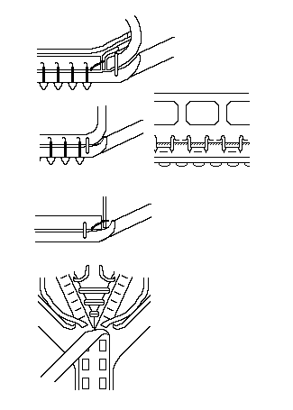

Before I discuss Roman shoes, allow me to note that there are some disagreements between scholars regarding some types of Roman shoes. In this document, and on the Development of Footwear Roman section, I have attempted to refine these arguments as I understand them.
Although there are numerous examples of Roman shoes found in archaeological sites, and a wide variety of shoes found in Roman literature, it is difficult to say with any certainty which fashions are represented by what shoes. I will try to do so when it is reasonable to do so, but it may not be possible in all cases. Some scholars feel that it is not even worth the attempt, and I won't say they are wrong. My feeling in this case, however, is that if one doesn't play, one can't win. If there are errors, they are mine and not the fault of my sources.
Something shold be said about construction of Roman footwear. The

following illustrations, which are after G�pfrich show that contrary to general understanding, Roman shoes were not hobnailed together. They were frequently sewn together with "tunnel stitches" and edge flesh/split holds. The back seam, at least of military boots, were sewn with grain-edge/split holds, with the inside of the seam covered with a strip, and sewn with a flat thonging. Obviously, these were not intended to be simple, disposable boots. They were quite sophisticated items.Return to Contents
Footwear of the Middle Ages - Roman Shoes, Copyright � 1996, 1999, 2001, 2002
I. Marc Carlson.
This page is given for the free exchange of information, provided the author's name is
included in all future revisions, and no money change hands, other than as expressed in
the Copyright Page.